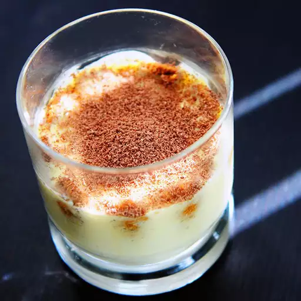

Tiramisu

Description
In addition to being a delicious dessert, tiramisu offers the perfect segue when trying to
steer the Valentine's dinner conversation towards spicier subjects.
This heady, mood-elevating concoction is rich and deeply satisfying yet remarkably light in texture.
Yes, you can use regular cream cheese, but mascarpone is far superior.
Ingredients
- ½ cup brewed espresso
- 3 tablespoons Marsala wine, divided
- 2 large eggs, separated
2 tablespoons white sugar
Steps
- Stir together espresso and 2 tablespoons wine in a shallow bowl. Set aside.
- Whisk together egg yolks, 2 tablespoons plus 1 teaspoon sugar, and remaining 1 tablespoon wine in a large bowl over a pot of simmering water until thick, pale yellow, and creamy, 5 to 6 minutes.
- Remove the bowl from heat and whisk in mascarpone, vanilla, and salt until completely smooth.
- Beat egg whites in a glass or metal bowl until stiff peaks form. Lift your beater or whisk straight up to ensure egg whites form sharp peaks. Gently stir and fold 1/2 of the egg whites into mascarpone mixture; fold in remaining egg whites.
- Wrap both glasses in plastic wrap and refrigerate for at least 8 hours to overnight. Remove plastic wrap and dust tops with cocoa and grated chocolate before serving.